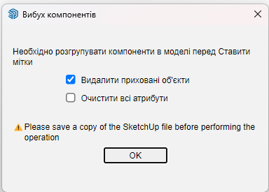

Актуальна версія плагіну 1.4.0. Плагін знаходиться в гілці "плагін" в нашій групі телеграм, внизу завжди актуальна версія яка буде самостійно оновлюватись (попередньо питая вашої згоди). Дія плагіну основана на преносі кріплень та окремих пазів ABF, яки ви зазделегіть зробили та вклали в фурнітуру (це дозволяє відмовитися від використання додаткових дошок,а відразу переносить всі креплення та пази з фурнітури на корпус). Корпус повинен бути групою.
Addons for ABF

Інтерфейс плагіну
1) Перенос кріплення та пазів (працює як з одією так і з декількома групами одночасно, ПОТРІБНО ВИДІЛИТИ ОДНУ АБО ДЕКІЛЬКА ГРУП ПЕРЕД ЗАПУСКОМ, а після повідомлення “Кріплення перенесено ..шт код завершив свою роботу
2) Властивості фурнітури (назначає фурнітурі та отворам атрибути, після чого вона буде попадати в звіт АБФ та гугл таблицю. Якщо обрано що це фурнітура-то заблокує групу щоб та не попадала в розкладку АБФ, а якщо “отвір”-то зробить так щоб він переносився)
3)Додати префікс модулю,та деталям в ньому
4) Зміна диаметру, глибини та артикулу(ів) у вже створенних отворах
5) Відкриває специфікацію
6) Налаштування: перелік постачальників (для випадаючого списку), імпорт та експорт постачальників та прайсу
7) Видалити/змінити номер деталі абф
8) Відкриває інструкцію
9 ) Перевірка оновлення
2) Властивості фурнітури (назначає фурнітурі та отворам атрибути, після чого вона буде попадати в звіт АБФ та гугл таблицю. Якщо обрано що це фурнітура-то заблокує групу щоб та не попадала в розкладку АБФ, а якщо “отвір”-то зробить так щоб він переносився)
3)Додати префікс модулю,та деталям в ньому
4) Зміна диаметру, глибини та артикулу(ів) у вже створенних отворах
5) Відкриває специфікацію
6) Налаштування: перелік постачальників (для випадаючого списку), імпорт та експорт постачальників та прайсу
7) Видалити/змінити номер деталі абф
8) Відкриває інструкцію
9 ) Перевірка оновлення

Як працювати з плагіном

Вимоги:
Перед використанням плагіну потрібно проставити мітки за допомогою ABF. Інакше плагін не знайде деталі на які переносити кріплення.
Перед використанням плагіну потрібно проставити мітки за допомогою ABF. Інакше плагін не знайде деталі на які переносити кріплення.

Перед простановкою міток, ABF покаже вікно і треба прибрати нижню галку

Модулі повинні бути групами - спочатку треба обрати модулі на яких будемо переносити кріплення (один, або декілька, або всі) і натиснути кнопку
Встановити плагін з гілки групи, налаштувати під себе перелік постачальників ТА ЗБЕРЕЖІТЬ РЕЗЕРВНУ КОПІЮ ФАЙЛА!!!
Перші налаштування
Щоб отвори перенеслись вони повинні мати і`мя ABF_Hole (будь який плагін Кості) або тег (слой) - якщо назва групи не така

Фурнітура повинна мати тег (слой) в якому міститься слово "фурнітура" в будь якому місці та регістрі. Фурнітура може бути составна, але тоді обов`язково щоб на кожну її складову був прописаний тег в якому міститься слово "фурнітура", а також на саму групу комплекту. Отвори можемо вставляти всередину груп фурнітури. Див анімацію нижче
Щоб фурнітура потрапляла в таблицю, треба спочатку надати їй властивості кнопкою
Властивості фурнітури
Відкриється вікно назначення властивостей, і якщо група 3D -її заблокує щоб вона не потрапила в деталі. Якщо це плоска група-то їй назначить ім`я для переносу отвора "ABF_Hole"

Поле "Дозамовити вручну" стосується виключно Віяр, якщо стоїть "Так" - то ця фурнітура потрапляє до вкладки віяр в таблиці (специфікації) звідки її можна зберегти в CSV і додати до проекту віяр
Робота з таблицею
В таблицю виводить усі фурнітуру для якої ми прописали властивості, а також стандартні кріплення ABF (після переносу кріплень), також отвори створені плагінами Костянтина (AddFurnABF та AddABF_Tool) у яких ви назначили назву, якщо отвір вам не треба в таблиці то не назначайте йому назву при створенні отвору!
Скрін з AddFurnABF